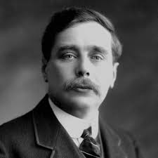
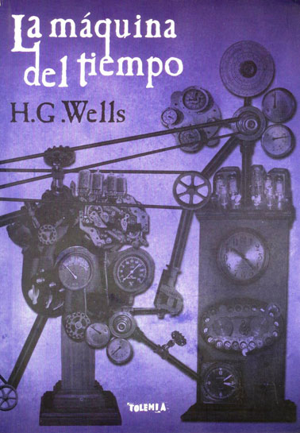
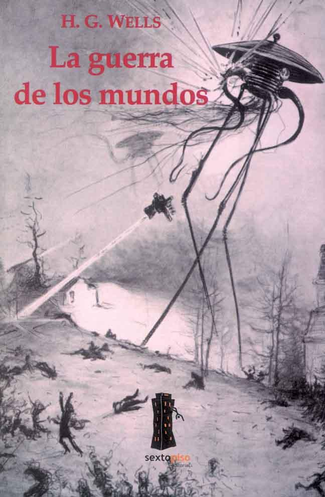
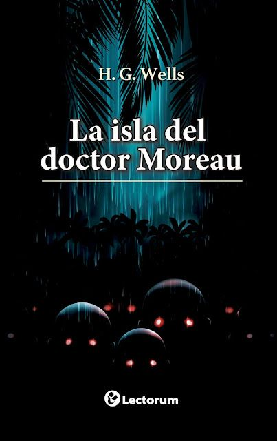

H.G. Wells (1866-1946) fue un escritor británico, pionero de la ciencia ficción y destacado pensador social. Nació el 21 de septiembre de 1866 en Bromley, Inglaterra, en una familia de escasos recursos. Tras estudiar biología con una beca, se interesó por la literatura y la divulgación científica. Saltó a la fama con sus novelas de ciencia ficción, como La máquina del tiempo (1895), El hombre invisible (1897) y La guerra de los mundos (1898), donde combinó ideas científicas con crítica social. También escribió ensayos políticos, defendiendo el socialismo y el pacifismo. Wells fue un visionario que anticipó tecnologías como los tanques de guerra y los viajes espaciales. Murió el 13 de agosto de 1946 en Londres, dejando un legado como uno de los padres de la ciencia ficción moderna.
Biografía:
Una Vida entre la Ciencia y la Rebeldía
Infancia: Los Años de la Pobreza
Herbert George Wells nació el 21 de septiembre de 1866 en Bromley, un pequeño pueblo inglés, en el seno de una familia de escasos recursos. Su padre, Joseph Wells, había sido jugador de cricket antes de convertirse en un pequeño comerciante fracasado, mientras que su madre, Sarah Neal, trabajó como sirvienta antes de casarse.
La precariedad económica marcó sus primeros años, pero también lo empujó hacia los libros. Un accidente a los siete años —una fractura de pierna que lo dejó postrado— lo acercó a la lectura. Entre las páginas de Los viajes de Gulliver y los textos de historia natural, el joven Wells encontró un escape a la gris realidad que lo rodeaba.
Juventud: Trabajo Duro y Primeras Rebeliones
A los catorce años, la familia ya no podía mantenerlo, y Wells fue enviado a trabajar como aprendiz en una tienda de telas. Fue un período oscuro, lleno de largas horas y sueldos miserables. Sin embargo, su curiosidad intelectual no se apagó. Consiguió empleo como asistente en una escuela, donde descubrió que la educación podría ser su salvación. A los dieciocho, logró una beca para estudiar en la Normal School of Science de Londres, un momento crucial que cambiaría su vida.
Educación: La Huella de Darwin y Huxley
En la universidad, Wells tuvo la fortuna de ser alumno de Thomas Henry Huxley, el célebre defensor de la teoría de la evolución de Darwin. Las clases de Huxley no solo le enseñaron biología, sino también a pensar de manera crítica y escéptica.
Aunque no terminó su carrera (abandonó los estudios por dificultades económicas), la influencia del darwinismo social y el debate científico impregnarían toda su obra literaria. Más tarde, esta formación se reflejaría en novelas como La máquina del tiempo, donde exploraba la degeneración de la humanidad, o La isla del Dr. Moreau, una reflexión sobre los límites de la experimentación científica.
Otros Trabajos: Periodismo, Enseñanza y los Primeros Escritos
Antes de convertirse en un autor reconocido, Wells pasó por múltiples empleos: fue profesor en una escuela rural, tutor privado y periodista. Escribía artículos científicos y relatos cortos para revistas, pero no fue hasta 1895, con la publicación de La máquina del tiempo, que su carrera despegó. La novela, que mezclaba especulación científica con crítica social, lo catapultó a la fama.
En los años siguientes, publicaría sus obras más influyentes: El hombre invisible, La guerra de los mundos y La isla del Dr. Moreau, consolidándose como el padre de la ciencia ficción moderna.
Influencias: Ciencia, Socialismo y Utopía
Wells no solo fue un escritor, sino también un pensador comprometido con las ideas progresistas de su tiempo. Influenciado por el socialismo fabiano, soñaba con una sociedad gobernada por la razón y la ciencia, aunque con el tiempo se desencantó de los movimientos políticos tradicionales. Su visión del futuro oscilaba entre la esperanza en un mundo unificado bajo un gobierno global (The Shape of Things to Come) y el temor a que la humanidad cayera en la barbarie (La guerra de los mundos). También fue un defensor temprano de los derechos de la mujer y el control de la natalidad, temas que abordó en novelas como Ann Veronica.
Sus Últimos Días: Amargura y Desencanto
Los últimos días de H.G. Wells estuvieron teñidos de una profunda amargura y desencanto. Aunque había dedicado su vida a imaginar futuros utópicos gobernados por la razón y la ciencia, sus años finales lo encontraron cada vez más pesimista sobre el rumbo de la humanidad. La Segunda Guerra Mundial fue un golpe devastador para sus ideales. Desde su casa en Londres, Wells presenció los bombardeos nazis durante el Blitz, un espectáculo de destrucción que parecía burlarse de su antigua fe en el progreso humano. El conflicto lo llevó a un doloroso replanteamiento de sus ideas.
Aunque siempre se había declarado pacifista, la amenaza del fascismo lo obligó a apoyar temporalmente el esfuerzo bélico aliado. Sin embargo, su apoyo fue crítico: en "The Outlook for Homo Sapiens" (1942), Wells arremetió contra Winston Churchill y los líderes políticos, a quienes acusó de perpetuar los mismos errores que habían llevado a la guerra.
Su desilusión no era solo con los gobiernos, sino con la naturaleza humana misma. En el plano personal, estos años estuvieron marcados por el deterioro físico. La diabetes que padecía lo debilitó progresivamente, y en 1944 sufrió un infarto que lo dejó aún más frágil. A pesar de ello, siguió escribiendo hasta el final. Su última obra importante, "Mind at the End of Its Tether" (1945), es un texto oscuro y casi apocalíptico donde sugiere que la humanidad podría estar condenada a la extinción, incapaz de adaptarse a los cambios que ella misma había creado.
Wells murió el 13 de agosto de 1946 en su hogar de Londres, a los 79 años. Sus restos fueron incinerados y esparcidos en el mar, según sus deseos. Aunque sus últimos años estuvieron dominados por la sombra del pesimismo, su legado perduró como el de un visionario que, incluso en su escepticismo final, nunca dejó de cuestionar el mundo que lo rodeaba. Hoy se lo recuerda no solo por sus predicciones tecnológicas, sino por su aguda conciencia de las contradicciones del progreso y la fragilidad de la civilización.
Obras más influyentes
La máquina del tiempo (1895)

Esta novela introduce el concepto de viaje en el tiempo a través de un inventor que crea una máquina capaz de transportarse al futuro. Explora temas como la evolución humana, la división de clases (representada por los Eloi y los Morlocks) y el destino de la civilización.
La guerra de los mundos (1898)

Una invasión marciana a la Tierra, narrada con un realismo innovador para la época. Wells critica el imperialismo británico al invertir los roles (los humanos son colonizados) y explora la vulnerabilidad humana ante fuerzas superiores. Famoso por su adaptación radiofónica de Orson Welles en 1938, que causó pánico.
El hombre invisible (1897)
La historia de Griffin, un científico que descubre cómo volverse invisible pero no puede revertir el proceso, llevándolo a la locura y la violencia. Aborda temas como la ética científica, la alienación y los límites del conocimiento humano.
La isla del Dr. Moreau (1896)

Un náufrago llega a una isla donde un científico realiza experimentos crueles para convertir animales en seres humanos. La novela cuestiona los límites de la manipulación genética (antes de que el concepto existiera), la naturaleza de la humanidad y la moralidad científica.
Enlaces Externos
-
Accedé a más información en Wikipedia
-
Escuchá audiolibros de sus obras
-
Encontrá reseñas de sus obras en YouTube